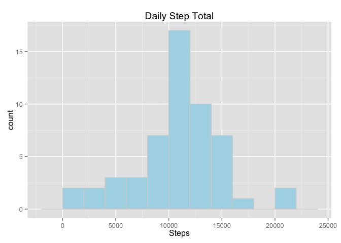
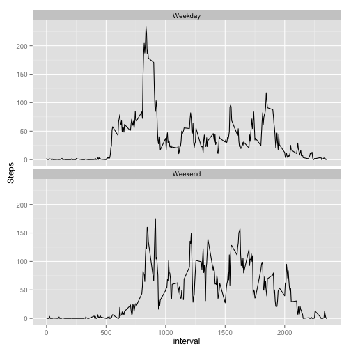

Prerequisites:
Read in the file 'activity.csv' and create a summary by day (called daily.activity), and a summary by invterval (called interval.activity)
library(plyr)
library(ggplot2)
activity <- read.csv("activity.csv")
Prerequisites:
To plot the histogram of the number of steps, ddply is used to aggregate the data for each day using the data frame
daily.activity <- ddply(activity, "date", summarise, daily.total=sum(steps))
p <- ggplot(daily.activity, aes(x=daily.activity$daily.total))
p <- p + geom_histogram(binwidth=2000, fill="orange", colour="lightgrey")
p <- p + ggtitle("Daily Step Total")
p <- p + xlab("Steps")
print(p)
The mean number of steps is 1.0766 × 104
The median number of steps is 1.0765 × 104
Prerequisites:
To plot the activity by interveral, ddply is used to aggregate the data for each interval.
interval.activity <- ddply(activity, "interval", summarise, mean.steps=mean(steps,na.rm=TRUE))
p <- ggplot(interval.activity, aes(x=interval, y=mean.steps))
p <- p + geom_line()
p <- p + ggtitle("Interval Activity Patterns")
p <- p + xlab("Invterval")
p <- p + ylab("Steps")
print(p)
The interval with the most activity is 835 with 206.2 steps
Prerequisites:
The missing values will be replaced by the interval average for each individual interval. Then, ddply is used to aggregate the data for each day using the data frame to create a plot the histogram of the number of steps.
fixed.activity <- activity
fixed.activity[is.na(fixed.activity$steps), "steps"] <- interval.activity[interval.activity$interval == fixed.activity[is.na(fixed.activity$steps),"interval"],"mean.steps"]
fixed.daily.activity <- ddply(fixed.activity, "date", summarise, daily.total=sum(steps))
p <- ggplot(fixed.daily.activity, aes(x=fixed.daily.activity$daily.total))
p <- p + geom_histogram(binwidth=2000, fill="lightblue", colour="lightgrey")
p <- p + ggtitle("Daily Step Total")
p <- p + xlab("Steps")
print(p)

The mean number of steps is 1.0766 × 104
The median number of steps is 1.0766 × 104
A comparison of the means and medians from before the data was is presented below:
The difference between the fixed and original means is: -0.2
The difference between the fixed and original medians is: 0.6
Prerequisites:
The first task is to transform the activities data frame by add a column indicating whether the date falls during the week or weekend.
in.weekend <- function(d) {(weekdays(d) %in% c("Saturday","Sunday"))}
fixed.activity <- transform(fixed.activity, weekend = in.weekend(as.Date(fixed.activity$date)))
fixed.interval.activity <- ddply(fixed.activity, c("interval","weekend"), summarise, mean.steps=mean(steps,na.rm=TRUE))
p <- ggplot(fixed.interval.activity, aes(x=interval, y=mean.steps))
p <- p + geom_line()
p <- p + ylab("Steps")
p <- p + facet_wrap(~weekend, ncol=1)
print(p)
